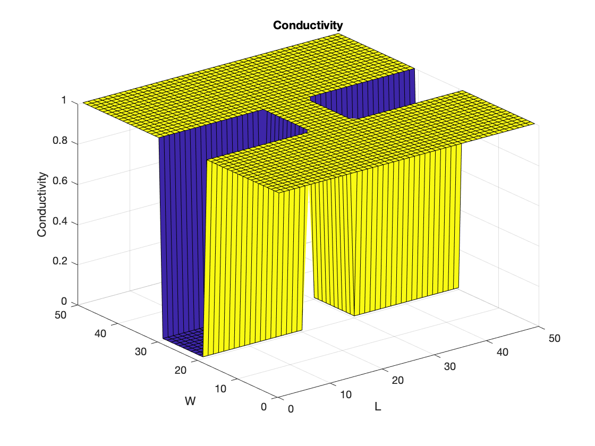
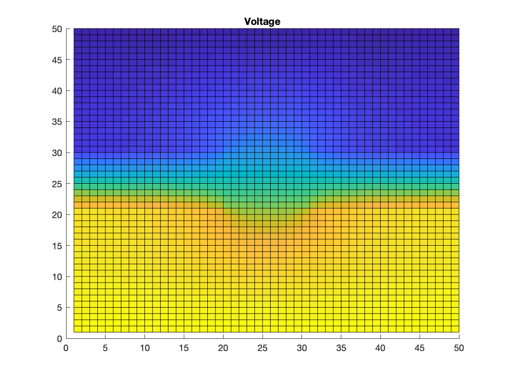
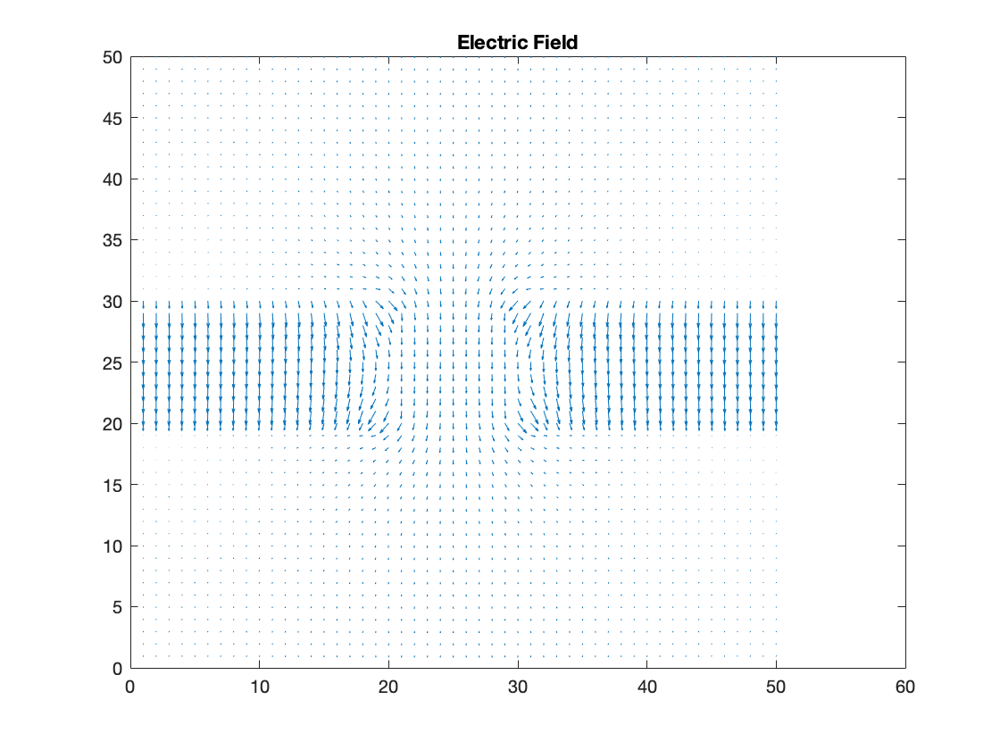
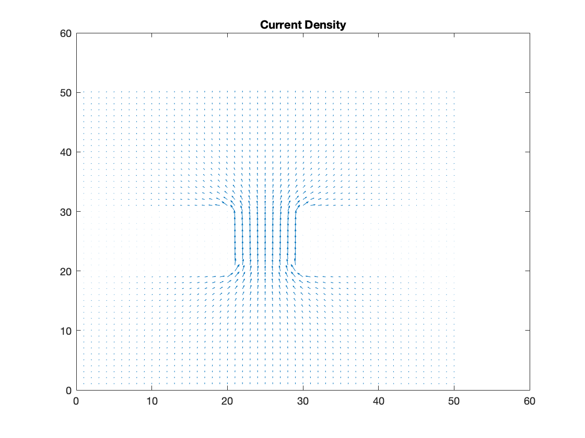
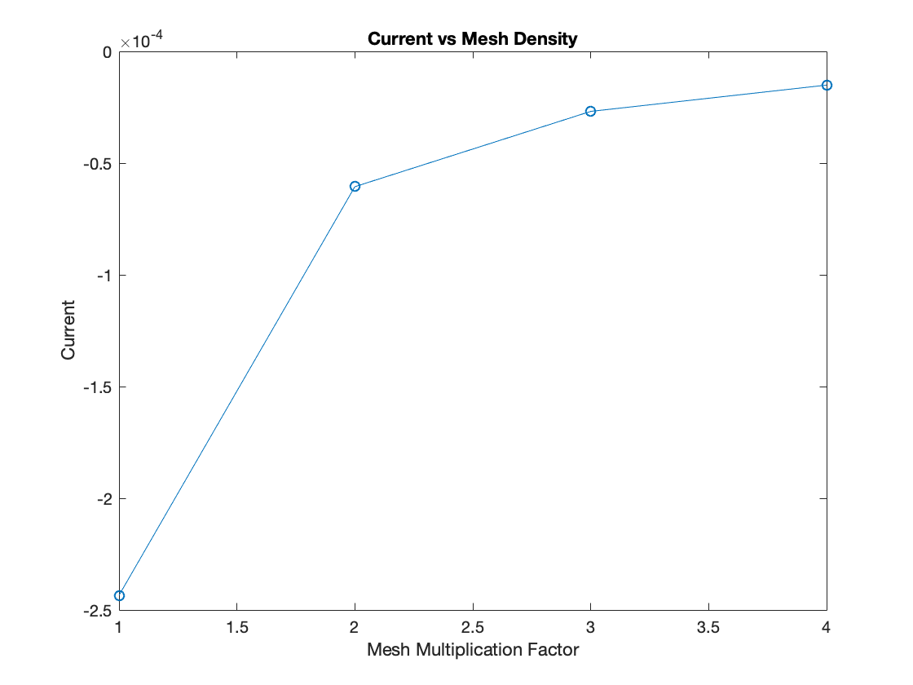
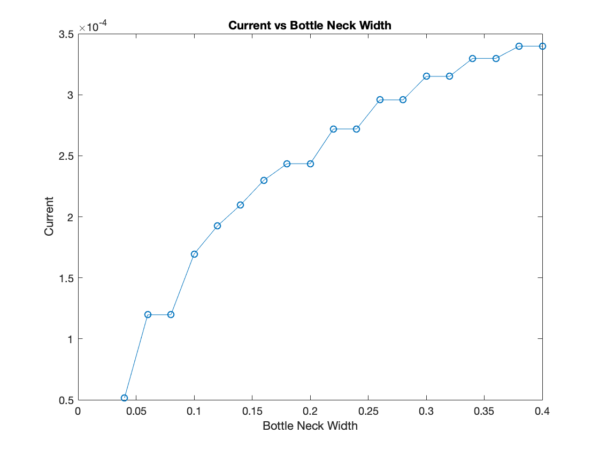
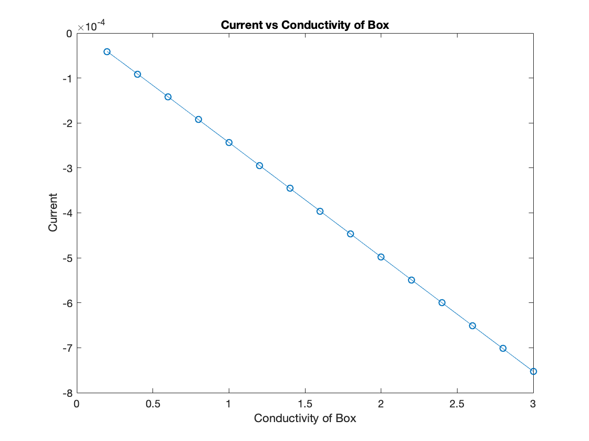

Part 2: Current Flow in Rectangular Region
The second part of the assignemnt consisted of using the Finite Difference Method to solve for the current flow in a given rectangle. The rectangle had two boxes within the region that were to have a very high resistance. To model the high resistance of the boxes, the regions were assigned to have a low conductivity.
close all; clear; Sigma = 1; mult = 1; nx = 50*mult; ny = 50*mult; G = sparse (nx*ny, nx*ny); B = zeros(1, nx*ny); cMap = zeros (nx, ny); %Loop to assign Conductivity for i = 1:nx for j = 1:ny if (i>=0.4*nx && i<=0.6*nx && j<=0.4*ny) || (i>=0.4*nx && i<=0.6*nx && j>=0.6*ny) cMap(i,j) = .01; else cMap(i,j) = Sigma; end end end for i = 1:nx for j = 1:ny n = j + (i-1)*ny; if i == 1 G(n, :) = 0; G(n, n) = 1; B(n) = 1; elseif i == nx G(n, :) = 0; G(n, n) = 1; elseif j == 1 nxm = j + (i - 2)*ny; nxp = j + (i)*ny; nyp = j + 1 + (i - 1)*ny; rxm = (cMap(i,j) + cMap(i - 1, j))/2; rxp = (cMap(i,j) + cMap(i + 1, j))/2; ryp = (cMap(i,j) + cMap(i, j + 1))/2; G(n, n) = -(rxm + rxp + ryp); G(n, nxm) = rxm; G(n, nxp) = rxp; G(n, nyp) = ryp; elseif j == ny nxm = j + (i - 2)*ny; nxp = j + (i)*ny; nym = j - 1 + (i - 1)*ny; rxm = (cMap(i,j) + cMap(i - 1, j))/2; rxp = (cMap(i,j) + cMap(i + 1, j))/2; rym = (cMap(i,j) + cMap(i, j - 1))/2; G(n, n) = -(rxm + rxp + rym); G(n, nxm) = rxm; G(n, nxp) = rxp; G(n, nym) = rym; else nxm = j + (i - 2)*ny; nxp = j + (i)*ny; nym = j - 1 + (i - 1)*ny; nyp = j + 1 + (i - 1)*ny; rxm = (cMap(i,j) + cMap(i - 1, j))/2; rxp = (cMap(i,j) + cMap(i + 1, j))/2; rym = (cMap(i,j) + cMap(i, j - 1))/2; ryp = (cMap(i,j) + cMap(i, j + 1))/2; G(n, n) = -(rxm + rxp + ryp + rym); G(n, nxm) = rxm; G(n, nxp) = rxp; G(n, nym) = rym; G(n, nyp) = ryp; end end end V = G\B'; vMap = zeros(nx,ny); for i=1:nx for j=1:ny n = j + (i - 1)*ny; vMap(i,j) = V(n); end end
The conductivity of the region can be seen in the Figure below. Note that within the high resistivity regions the conductivity was assigned a value of 0.01 while elsewhere in the region was assigned a conductivity of 1.
%Plot section figure(1); surf(cMap); title('Conductivity'); xlabel('L'); ylabel('W'); zlabel('Conductivity');
The Finite Difference Method was then applied to solve for the current flow through the region. A voltage map was created for the region and can be seen in the Figure below.
%Potential Plot figure(2) surf(vMap); title('Voltage'); view(0,90);
The electric field was then determined for the region. The electric field was found by taking the gradient of the voltage matrix. The electric field of the region can be seen in the Figure below.
%Electric Field Plot [Ex, Ey] = gradient(vMap); figure(3) quiver(Ex, Ey); title ('Electric Field');
The current density for the region was then found as the product of the electric field matrix and the conductivity map of the region. The current desnity for the region can be found in the Figure below.
EX = -Ex; EY = -Ey; %Current Density Jx = cMap.*EX; Jy = cMap.*EY; figure(4) quiver(Jx, Jy); title('Current Density'); %Curr_Left = sum(Jx(1:ny, 1)) %Curr_right = sum(Jx(1:ny, nx))
The mesh density of the region was then altered to investigate the effects this would have on the current in the region. The current was found as the sum of currents on the edge of the box. The original Mesh density for the region was 50 points in the x direction and 50 points in the y direction. The number of points was multiplied by a 'mesh factor' and the current along the box was recorded at each mesh density.
for k=1:4 mult = k; nx = 50*mult; ny = 50*mult; G = sparse (nx*ny, nx*ny); B = zeros(1, nx*ny); cMap = zeros (nx, ny); %Loop to assign Conductivity for i = 1:nx for j = 1:ny if (i>=0.4*nx && i<=0.6*nx && j<=0.4*ny) || (i>=0.4*nx && i<=0.6*nx && j>=0.6*ny) cMap(i,j) = .01; else cMap(i,j) = Sigma; end end end for i = 1:nx for j = 1:ny n = j + (i-1)*ny; if i == 1 G(n, :) = 0; G(n, n) = 1; B(n) = 1; elseif i == nx G(n, :) = 0; G(n, n) = 1; elseif j == 1 nxm = j + (i - 2)*ny; nxp = j + (i)*ny; nyp = j + 1 + (i - 1)*ny; rxm = (cMap(i,j) + cMap(i - 1, j))/2; rxp = (cMap(i,j) + cMap(i + 1, j))/2; ryp = (cMap(i,j) + cMap(i, j + 1))/2; G(n, n) = -(rxm + rxp + ryp); G(n, nxm) = rxm; G(n, nxp) = rxp; G(n, nyp) = ryp; elseif j == ny nxm = j + (i - 2)*ny; nxp = j + (i)*ny; nym = j - 1 + (i - 1)*ny; rxm = (cMap(i,j) + cMap(i - 1, j))/2; rxp = (cMap(i,j) + cMap(i + 1, j))/2; rym = (cMap(i,j) + cMap(i, j - 1))/2; G(n, n) = -(rxm + rxp + rym); G(n, nxm) = rxm; G(n, nxp) = rxp; G(n, nym) = rym; else nxm = j + (i - 2)*ny; nxp = j + (i)*ny; nym = j - 1 + (i - 1)*ny; nyp = j + 1 + (i - 1)*ny; rxm = (cMap(i,j) + cMap(i - 1, j))/2; rxp = (cMap(i,j) + cMap(i + 1, j))/2; rym = (cMap(i,j) + cMap(i, j - 1))/2; ryp = (cMap(i,j) + cMap(i, j + 1))/2; G(n, n) = -(rxm + rxp + ryp + rym); G(n, nxm) = rxm; G(n, nxp) = rxp; G(n, nym) = rym; G(n, nyp) = ryp; end end end V = G\B'; vMap = zeros(nx,ny); for i=1:nx for j=1:ny n = j + (i - 1)*ny; vMap(i,j) = V(n); end end [Ex, Ey] = gradient(vMap); EX = -Ex; EY = -Ey; Jx = cMap.*EX; Jy = cMap.*EY; Curr_Left = sum(Jx(1:ny, 1)); Curr_right = sum(Jx(1:ny, nx)); Curr1(k) = Curr_Left; end mult1 = [1 2 3 4];
The results can be seen in the Figure below. The current increased as the number of points increased, however not linearly. The data suggests a maximum current may be hit as the mesh density increases.
figure(5) plot(mult1, Curr1, '-o'); title('Current vs Mesh Density'); xlabel('Mesh Multiplication Factor'); ylabel('Current');
The width of the bottle neck was then adjusted to determine the effects this would have on the current.
counter = 1; for k=0.3:0.01:0.48 mult = k; opp = 1 - k; dist = opp - k; dist_array(counter) = dist; nx = 50; ny = 50; G = sparse (nx*ny, nx*ny); B = zeros(1, nx*ny); cMap = zeros (nx, ny); %Loop to assign Conductivity for i = 1:nx for j = 1:ny if (i>=0.4*nx && i<=0.6*nx && j<=k*ny) || (i>=0.4*nx && i<=0.6*nx && j>=opp*ny) cMap(i,j) = .01; else cMap(i,j) = Sigma; end end end for i = 1:nx for j = 1:ny n = j + (i-1)*ny; if i == 1 G(n, :) = 0; G(n, n) = 1; B(n) = 1; elseif i == nx G(n, :) = 0; G(n, n) = 1; elseif j == 1 nxm = j + (i - 2)*ny; nxp = j + (i)*ny; nyp = j + 1 + (i - 1)*ny; rxm = (cMap(i,j) + cMap(i - 1, j))/2; rxp = (cMap(i,j) + cMap(i + 1, j))/2; ryp = (cMap(i,j) + cMap(i, j + 1))/2; G(n, n) = -(rxm + rxp + ryp); G(n, nxm) = rxm; G(n, nxp) = rxp; G(n, nyp) = ryp; elseif j == ny nxm = j + (i - 2)*ny; nxp = j + (i)*ny; nym = j - 1 + (i - 1)*ny; rxm = (cMap(i,j) + cMap(i - 1, j))/2; rxp = (cMap(i,j) + cMap(i + 1, j))/2; rym = (cMap(i,j) + cMap(i, j - 1))/2; G(n, n) = -(rxm + rxp + rym); G(n, nxm) = rxm; G(n, nxp) = rxp; G(n, nym) = rym; else nxm = j + (i - 2)*ny; nxp = j + (i)*ny; nym = j - 1 + (i - 1)*ny; nyp = j + 1 + (i - 1)*ny; rxm = (cMap(i,j) + cMap(i - 1, j))/2; rxp = (cMap(i,j) + cMap(i + 1, j))/2; rym = (cMap(i,j) + cMap(i, j - 1))/2; ryp = (cMap(i,j) + cMap(i, j + 1))/2; G(n, n) = -(rxm + rxp + ryp + rym); G(n, nxm) = rxm; G(n, nxp) = rxp; G(n, nym) = rym; G(n, nyp) = ryp; end end end V = G\B'; vMap = zeros(nx,ny); for i=1:nx for j=1:ny n = j + (i - 1)*ny; vMap(i,j) = V(n); end end [Ex, Ey] = gradient(vMap); EX = -Ex; EY = -Ey; Jx = cMap.*Ex; Jy = cMap.*Ey; Curr_Left = sum(Jx(1:ny, 1)); Curr_right = sum(Jx(1:ny, nx)); Curr2(counter) = Curr_Left; counter = counter + 1; end
The distance between the two low conductivity regions was increased and the resulting currents may be seen in the figure below. The current at the edge of the box increased as the distance between the two low conductivity regions increased which makes sense given that more current is able to flow through the region.
figure(6) plot(dist_array, Curr2, '-o'); title('Current vs Bottle Neck Width'); xlabel('Bottle Neck Width'); ylabel('Current');
The conductivity of the box was then altered to determine how this would affect the this would affect the current flow through the edge of the box.
counter2 = 1; for k=0.2:0.2:3 Sigma = k; Conductivity(counter2) = Sigma; nx = 50; ny = 50; G = sparse (nx*ny, nx*ny); B = zeros(1, nx*ny); cMap = zeros (nx, ny); %Loop to assign Conductivity for i = 1:nx for j = 1:ny if (i>=0.4*nx && i<=0.6*nx && j<=0.4*ny) || (i>=0.4*nx && i<=0.6*nx && j>=0.6*ny) cMap(i,j) = .01; else cMap(i,j) = Sigma; end end end for i = 1:nx for j = 1:ny n = j + (i-1)*ny; if i == 1 G(n, :) = 0; G(n, n) = 1; B(n) = 1; elseif i == nx G(n, :) = 0; G(n, n) = 1; elseif j == 1 nxm = j + (i - 2)*ny; nxp = j + (i)*ny; nyp = j + 1 + (i - 1)*ny; rxm = (cMap(i,j) + cMap(i - 1, j))/2; rxp = (cMap(i,j) + cMap(i + 1, j))/2; ryp = (cMap(i,j) + cMap(i, j + 1))/2; G(n, n) = -(rxm + rxp + ryp); G(n, nxm) = rxm; G(n, nxp) = rxp; G(n, nyp) = ryp; elseif j == ny nxm = j + (i - 2)*ny; nxp = j + (i)*ny; nym = j - 1 + (i - 1)*ny; rxm = (cMap(i,j) + cMap(i - 1, j))/2; rxp = (cMap(i,j) + cMap(i + 1, j))/2; rym = (cMap(i,j) + cMap(i, j - 1))/2; G(n, n) = -(rxm + rxp + rym); G(n, nxm) = rxm; G(n, nxp) = rxp; G(n, nym) = rym; else nxm = j + (i - 2)*ny; nxp = j + (i)*ny; nym = j - 1 + (i - 1)*ny; nyp = j + 1 + (i - 1)*ny; rxm = (cMap(i,j) + cMap(i - 1, j))/2; rxp = (cMap(i,j) + cMap(i + 1, j))/2; rym = (cMap(i,j) + cMap(i, j - 1))/2; ryp = (cMap(i,j) + cMap(i, j + 1))/2; G(n, n) = -(rxm + rxp + ryp + rym); G(n, nxm) = rxm; G(n, nxp) = rxp; G(n, nym) = rym; G(n, nyp) = ryp; end end end V = G\B'; vMap = zeros(nx,ny); for i=1:nx for j=1:ny n = j + (i - 1)*ny; vMap(i,j) = V(n); end end [Ex, Ey] = gradient(vMap); EX = -Ex; EY = -Ey; Jx = cMap.*EX; Jy = cMap.*EY; Curr_Left = sum(Jx(1:ny, 1)); Curr_right = sum(Jx(1:ny, nx)); Curr3(counter2) = Curr_Left; counter2 = counter2 + 1; end
Unsuprisingly, there was a direct linear correlation between the conductivity of the box and the current flowing through the edge of the box. The resulting graph can be seen in the figure below.
figure(7); plot(Conductivity, Curr3, '-o'); title('Current vs Conductivity of Box'); xlabel('Conductivity of Box'); ylabel('Current');